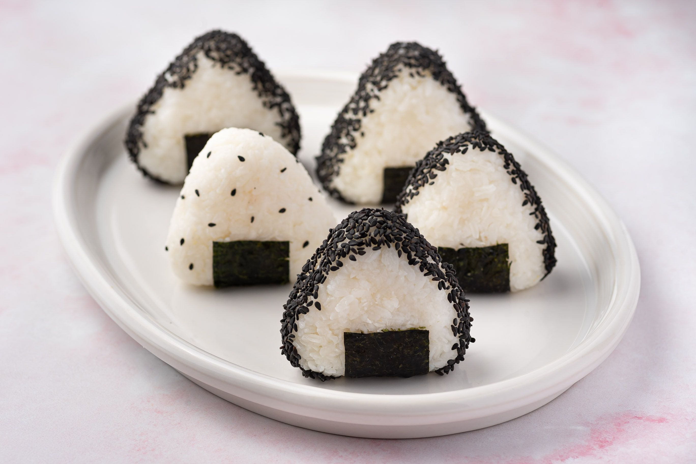

Onigiri

Description
Onigiri are Japanese rice balls. They're fun to make and are a staple of Japanese lunchboxes (bento).
You can put almost anything in an onigiri; try substituting grilled salmon, pickled plums, beef, pork, turkey,
or tuna with mayonnaise.
Ingredients
- 4 cups uncooked short-grain white rice
- 4 1/2 cups water
- 1 cup water
- 1/4 teaspoon salt
- 1/4 cup bonito shavings (dry fish flakes)
- 2 sheets nori (dry seaweed), cut into 1/2-inch strips
- 2 tablespoons sesame seeds
Return to Homepage